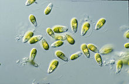

| Microalgae growth medium |
|  Homepage Introduction to microalgae Types of microalgae Microalgae growth medium Microalgae websites |
To
culture microalgae, we need to first make culture medium which
microalgae cells can grow in. There are different culture medium for
different types of microalgae and on this page, I will show you some
examples of microalgae culture medium that are used widely. Below
the description of each medium I provided links to pages where you
can buy the medium yourself. TAP Medium
TAP, which stands for
Tris-Acetate-Phosphate medium is a medium widely used for
culturing freshwater species such as Chlamydomonas reinhardtii,
Chlorella vulgaris, micractinium reisseri etc.
F/2 Medium
F/2 medium is a sea-water medium
used to culture species such as Nannochloropsis salina,
Porphyridium cruentum etc.
BG-11 Medium
BG-11 medium is a culture medium
developed to grow species such as Microcystis aeruginosa,
chlorella vulgaris etc.
Zarrouk's Medium
Zarrouk's medium is a medium
developed particularly for the cultivation of a specific species
of microalgae, spirulina.
|